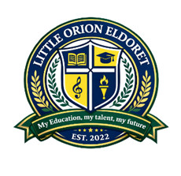

AI
Smart Learning Pathways
Personal progress dashboards, skill tracking, and guided goals for every learner.

Little Orion EldoretMy Education, My Talent, My Future
A future-ready school experience where strong foundations, creative talent, digital confidence, and character grow together.
The Orion Experience
Personal progress dashboards, skill tracking, and guided goals for every learner.
Science, culture, geography, and creativity brought to life through modern media.
Mentorship, collaboration, communication, and values woven into school life.
Programs
Foundation to future skills
Learners build literacy, numeracy, science thinking, communication, and problem solving through clear instruction and hands-on projects.
Connected Campus
The site concept includes fast admissions, digital newsletters, events, school calendar, fee reminders, transport notices, gallery updates, and parent inquiry flows.
Admissions
Share learner details and choose the class or pathway of interest.
Meet the team, tour the learning spaces, and discuss learner needs.
Complete documents, receive onboarding guidance, and join the community.
Parent & Learner Voice
A futuristic school site should feel human too: real stories, learner showcases, event moments, achievement walls, and transparent communication.
“Little Orion gives every child a place to learn, discover their talent, and prepare for the future with courage.”
School community messageGet In Touch
Send an inquiry, book a school visit, or subscribe for updates from the admissions office.